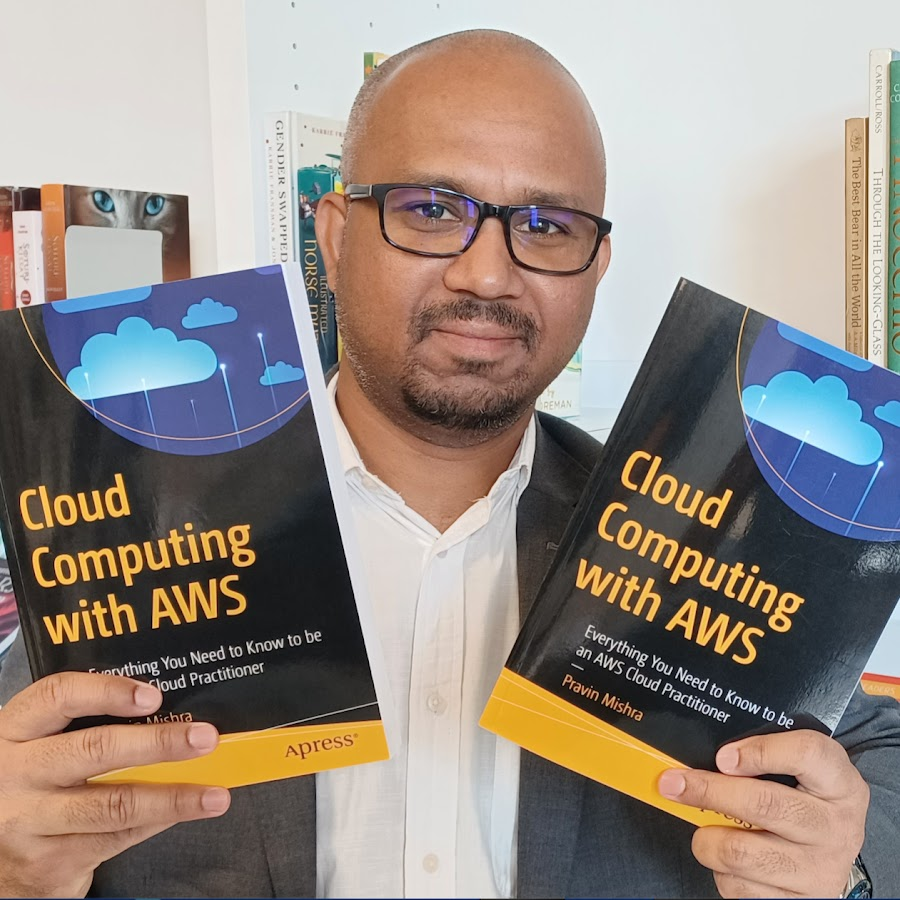

A hands-on, mentor-led 14-week program where you deploy real apps, create CI/CD pipelines, automate infrastructure, and learn directly from industry mentors.
Designed for rapid skill acquisition and real-world impact
Weekly deliverables, squad projects, and a final capstone — all mentor-reviewed with real feedback.
Every Saturday live session with Pravin Mishra and co-mentors — code reviews, Q&A, and direct feedback to accelerate your growth.
Real-world assignments every week — CI/CD pipelines, cloud deployments, and IaC projects you can demo to any employer.
We integrate Agentic AI throughout the program. The final capstone project is built entirely around Agentic AI with DevOps — the skill employers are hiring for right now.
Certificate co-issued by The CloudAdvisory and Pravin Mishra, validating practical DevOps project experience.
From fundamentals to production DevOps mastery
How the internet works, protocols, DNS, and networking fundamentals
Growth mindset, professional habits, and career planning for DevOps
AI-assisted development, Claude Code workflows, and prompt engineering
Linux essentials, file systems, permissions, and shell fundamentals
Automation scripts, loops, functions, and real-world DevOps tasks
Workflows, PRs, branching strategies, and collaboration best practices
Builds, tests, releases, Agile ceremonies, and team workflows
Hands-on labs with core AWS services and cloud architecture patterns
Azure fundamentals, services, and hybrid-cloud patterns
Infrastructure as Code best practices, modules, and state management
Configuration management, playbooks, roles, and secrets
CI/CD pipelines end to end with Azure DevOps and GitHub Actions
Images, containers, registries, Compose, and containerisation workflows
Cluster patterns, deployments, services, and workload management
Capstone showcase, code review, and certificate ceremony

Cloud, DevOps, Data & AI Consultant based in Helsinki, Finland. Helping companies modernise their systems, build scalable cloud architectures, and train thousands of professionals globally. Founder of The CloudAdvisory and author of 3 published books.